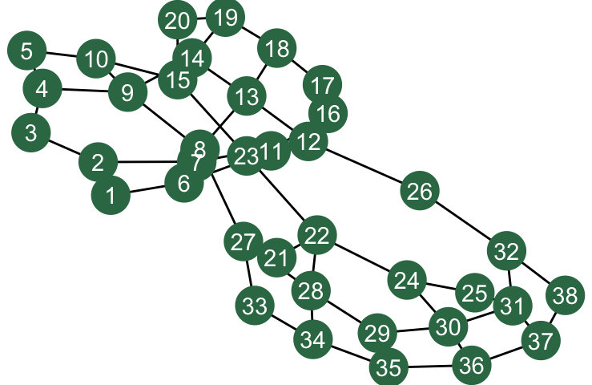

In California’s Central Valley, farms, orchards, dairies, and other agricultural industries use disproportionately more water than the communities where farm workers live in an increasingly precarious state. Wells increasingly run dry when they aren’t contaminated by deadly chemicals first. The state-level water restriction enforcement agency has recently rejected several plans proposed by local water district planners. All this currently occurs against a backdrop of climate variability and political instability that increasingly drives the migration of farmers and farm workers alike (see CA Central Valley water annotated references and links below). This problem is increasingly acute across diverse societies and aquifers, though in some cases groundwater is being restored to previously overdrawn aquifers (Jasechko et al. 2024).
Equitable access to clean potable water depends on cooperation among those sharing groundwater aquifers, consistent with the UN Sustainable Development Goals (SDGs) to Reduce Inequalities (SDG 10) and to provide Clean Water and Sanitation (SDG 6), representing Group I and Group B goals to, in general, support infrastructure/institutions and basic human needs, respectively. Cooperation to sustain groundwater resources is increasingly important since there are more frequent climate change-driven droughts threatening human and non-human life on land. This project, then, also addresses Group E (environmental and ecological protection) Sustainable Development Goals, namely to accelerate relevant Climate Action (SDG 13), and to protect the literal bedrock of ecosystems that support all Life on Land (SDG 15).
Theoretically, we know that high rates of migration can disrupt the formation of cooperative communities in idealized models of the establishment and diffusion of cooperation to effectively form collectives. However, many theoretical questions remain and existing results have not yet been interpreted for how they could support sustainability in any way, including groundwater sustainability. We therefore develop here a spatial agent-based model of cooperation where agents represent water consumers arranged on a spatial grid. Migration is represented as a random switch of two agents in the grid. Cooperation or its opposite, defection, result in different payoffs depending on which of these two behaviors interaction partners choose. Cooperation can be mutually beneficial, but it comes at the cost of an initial investment that will be uncompensated if a model interaction partner defects. If both individuals defect, i.e., choose to not cooperate, then they may face a disaster debit, i.e., a penalty that could represent, e.g., ecological collapse, external sanctions, or some other form of penalty.
We analyze how migration can break up cooperatives, i.e., blocks of cooperating agents who assort to effectively block out those who intend to defect. We characterize the effect of migration rate for a range of costs of cooperation. This basic analysis lays the groundwork for designing interventions that help maintain cooperation even with frequent migration (see Exercise 3).
Sources. Map: Becker, Rachel (Aug. 18, 2021). “California enacted a groundwater law 7 years ago. But wells are still drying up — and the threat is spreading”. Cal Matters. https://calmatters.org/environment/2021/08/california-groundwater-dry. See Contaminated water references below for information on towns marked as persistently reliant on bottled water.
4.1 Cooperation as a correlative coordination problem
Cooperation is a correlative coordination problem, meaning that payoffs are maximized when individuals do the same behavior as others. Cooperation dilemmas, in evolutionary game theory on which we draw here, are defined to entail the risk of betrayal, where defectors are those in society who reap the benefit of costly contributions of others, but not contributing anything themselves. The more general correlative coordination problems do not necessarily entail risk of betrayal in the same sense. For example, deciding which side of the street to drive on: it doesn’t matter which side, so long as everyone does that. There is no immediate “cost” to driving on the agreed-to side of the road, only benefit that you’ll be sure to avoid crashing head-on with others, so long as they correlate their behavior with yours, i.e., with some societal norm.
It is costly to cooperate with groundwater pumping limits from the point of view of agricultural producers. For example, less water input might mean lower almond yield and fewer profits in the short term. If enough other orchards defect, this could lead to dry wells, and it would prove to have been unwise to cooperate since defectors made the most money while it lasted, multiplied in effect if defectors evaded accountability for their behavior.
4.1.1 Cultural evolutionary game theory
Under success-biased learning, culture can be said to evolve. A behavior is like a phenotype, and knowledge of or capacity for a behavior is like genes or alleles that encode a phenotype. Fitness in either case is the benefit received from the phenotype expression.
To study how the prevalence of cooperation varies over time and as \(t \to \infty\), we assume each agent does one of two behaviors: Cooperate or Defect. In our approach here and in many cases, it is unnecessary to represent knowledge of how to cooperate itself, including the acquisition of this knowledge. In other words, doing a behavior implies having already learned how to do it. This strategic abstraction is called the phenotypic gambit, with “gambit” really meaning something more like “assumption”.
4.1.2 Inspiration behind this article
One of the goals of this article is to demonstrate socmod use by analyzing a game theory model of cooperation between agents on a spatial grid. The other goal is to motivate the study with a real-world sustainability problem, groundwater conservation. The model and analysis is inspired by Ch. 6 in Paul Smaldino’s book Modeling Social Behavior, including some of the exercises below that Paul includes in his analysis: Paul’s model is written in NetLogo, with analysis and visualizations done in R, it appears. See Paul’s book for how alternative assumptions enable the formal, mathematical analysis of cooperation prevalence in different spatial contexts with migration, as opposed to simulated/generative as done here.
4.2 Model
The model is implemented in model.R. I show code snippets from that file to illustrate how the model works. Agents are located at grid points in a rectangular 2D lattice, though we use a square lattice with \(L=21\) agents per side in our analysis here. Agents play a cooperation game, known as the prisoner’s dilemma game, a common game theory representation of cooperation where a focal agent gets a benefit \(b \in [0, \infty)\) if their interaction partner cooperates, but the focal agent pays a cost \(-c\) if they choose to cooperate, where \(c\in[0, \infty)\). The payoffs from combinations of the four possible combinations of (Cooperate/Defect) x (Cooperate/Defect) for the dyad define the game’s payoff matrix (Table 4.1).
4.2.1 Spatial structure
Spatial structure, we hypothesize, provides the substrate for cooperation to take hold since neighbors can form spatially organized cooperatives, i.e., clusters of contiguous, connected cooperators. We represent spatial structure by locating agent nodes in a two-dimensional lattice graph we set to be square with side length \(L\), so the agent population size is \(N = L^2\). The model grid can be rectangular in general, and it is left as an exercise to the reader to test what happens when \(N\) is held constant but the aspect ratio of the grid is varied, i.e., the width divided by the height.
First consider a grid with \(L=6\) agents per side, so \(N=36\) population size.
Agents interact with all of their neighbors on each time step, collecting payoffs according to whether an agent and each neighbor is currently doing the “Cooperate” or “Defect” behavior, or equivalently whether each agent is a cooperator or defector.
# Have the focal_agent play the coordination game with all neighborsplay_game_with_neighbors <-function(focal_agent, model) {# Focal agent plays game with neighbors, accumulating payoffs total_payoff <-sum(unlist(# Use the Neighbors$map function to play with all neighbors focal_agent$get_neighbors()$map( \(n) play_game(focal_agent, n, model) ) ))# Focal agent's fitness gets set to the total_payoff focal_agent$fitness_current <- total_payoff}
They receive payoffs resulting from play_game, which are given in Table 4.1 in terms of the benefit to cooperation, \(\beta\), the cost of cooperation, \(\gamma\), and the disaster debit \(-\delta\), where \(\beta,\gamma,\delta \in [0, \infty)\). For our initial study here we will set \(\delta = 0\), leaving an examination of how cooperation prevalence is affected for different values of \(\delta > 0\) as an exercise.
Table 4.1: Payoff matrix in dyadic interactions to focal agent, \(i\), whose behavior is read across rows.
# Two individuals play game with one another; b = coop_benefit, c = coop_costplay_game <-function(focal_agent, partner_agent, model) {return ( model$payoff_matrix[ focal_agent$behavior_current, partner_agent$behavior_current ] )}
4.2.3 Selection for cooperation via social learning
We implement success-biased learning here in a custom model_step function called coop_model_step used as the sole defining function for the LearningStrategy I call coop_game_strategy. coop_game_strategy uses NULL functions for partner_selection, since agents interact with all neighbors, and also for interaction, since agents accumulate payoffs over all interactions with neighbors. Both of these are implemented in the coop_model_step function that defines this learning strategy’s model_step named constructor parameter (full definition of coop_model_step is given in the Appendix).
# For this normal game in this format we don't have individual partner selection # and interaction steps. Instead all is handled in the model_step, # i.e., coop_model_step defined belowcoop_game_strategy <-make_learning_strategy(partner_selection = \(f, m) NULL,interaction = \(f, p, m) NULL,model_step = coop_model_step,label ="Normal game strategy")
4.2.4 Computational analysis design
To analyze how cooperation cost and migration rate affect the emergence of cooperatives in a spatial grid, we systematically vary these variables (Table 4.2) and observe the dynamics of cooperation prevalence over time and our main outcome measure, the prevalence of cooperators at \(t=50\), \(p_C(t=50)\) (Table 4.4). Specifically we first vary the cost of cooperation, \(\gamma\), setting the migration rate \(\mu = 0.0\), and observe the results. Second, we vary \(\mu\), setting \(\gamma = 0.2\), and observe the results.
4.2.5 Model parameters
The model parameters specify how agent learning and migration behavior work. They also set the size of the grid, which indirectly sets the number of agents. We systematically vary two of these, \(\gamma\) and \(\mu\), and observe the dynamics and outcomes to implement our computational experiments.
Table 4.2: Model parameter descriptions and settings. Values in italic indicate suggested “starter values” to begin development. Bold are the default values in the analyses we present here.
There are additional parameters that specify how simulation trials work (Table 4.3). In our analysis of outcome variable \(p_C(t)\), we run many simulations for each outcome type, dynamics or long-time “equilibrium” outcomes. We use \(t=50\) for the final time step and 20 trials per parameter setting in the outcome analyses below. For the . When developing the full output results, it is often useful to start with smaller values for each of these, with potential development values represented with italic font in Table 4.3.
Table 4.3: Computational analysis configuration parameter descriptions and settings. Values in italic indicate suggested “starter values” to begin development. Bold are the default values in the analyses we present here.
Description
Values
Final time step of simulation
20, 50
Number of trials per parameter setting
3, 5, 20
4.2.7 Outcome measures
We measure cooperator prevalence over time to compare its dynamics for different parameter settings. We also extract the prevalence at the end of each trial and aggregate across trials for different parameter settings to estimate the average equilibrium value, or range of equilibria values, of the dynamics as \(t \to \infty\) (Table 4.4).
Table 4.4: Outcome measures, description, and range. We observe cooperator prevalence dynamics and analyze the final apprixmate equilibrium prevalence at \(t=T\).
Outcome measure
Description
Values / Range
\(p_C(t)\)
Cooperator prevalence over time
\([0.0, 1.0]\)
\(p_C(t=T=50),\)\(\langle p_C(T)\rangle\)
Cooperator prevalence and average prevalence across trials at \(t=T\), using \(T=50\) here
\([0.0, 1.0]\)
4.2.8 Implementation
Simulation trial runs and output analysis were performed primarily using socmod, igraph, ggplot2, and other tidyverse packages, primarily dplyr for data manipulation and analysis and purrr for functional programming.
See run_trials.R for the simulation trial run methods and run_analysis.R that implements the visualizations and other analyses. All source code is available via the GitHub repository for this article: cooperation-model-socmod.
4.3 Analysis
To understand how the perceived risk or cost of cooperation and the mutation rate each affect the emergence of cooperation, we examined how cooperation cost and migration rate separately affect the emergence and maintenance of cooperation in simulated populations. We confirmed computationally that at or beyond critical cooperation cost, \(\gamma_c = \beta / 4\), stable cooperatives cannot form, the defect behavior fixates, and cooperation goes extinct (Figure 4.1 A). A similar analysis of a minimal five-agent “cross” or “plus” cooperative is unstable if \(2\beta > 4\beta - 4\gamma\), i.e., if \(\gamma > \beta / 2\) (Figure 4.1 B). This explains why we observe such a sharp transition from widespread cooperation to zero cooperation.
Figure 4.1: Defector-turns-cooperator and cooperator-turns defector conditions in the founding and destruction of cooperatives. Three cooperators in a line will result in new cooperators adjacent to the middle node of the triad if the cost of cooperation is less one quarter of the cooperation benefit, i.e., \(\gamma < \gamma_c = \beta / 4\) (A). A five-agent “cross” cooperative is unstable if the cost of cooperation is greater than half of the benefit: \(\gamma > \beta / 2\).
4.3.1 When does cost of cooperation become prohibitive?
We see that cooperation emerges at various non-zero equilibrium values for cooperation costs up to 0.25, including up to 0.249 (Figure 4.3)! In our initial conditions with half of the agents starting as cooperators, the prevalence of cooperators decreases initially as the relatively isolated cooperators become defectors (Figure 4.2). Then more and more agents join nascent cooperatives, so the prevalence eventually begins to increase again. When cooperation cost is 0, the dip is lowest, and cooperatives begin to grow and expand cooperator prevalence to their maximum values earlier on compared to greater cooperation costs with \(\gamma < \beta / 4\).
Figure 4.2: Dynamics of cooperator prevalence as a function of cooperation cost.
Figure 4.3: Dynamics of cooperator prevalence as a function of cooperation cost.
4.3.2 When does migration undermine cooperation?
Migration, as hypothesized, can undermine cooperation. Based on our reasoning to explain why cooperation is only supported up to \(\gamma = 0.25\), we see that for cooperators to spread, there must be at least three lined up to seed a cooperative that grows into a cluster of cooperators. For this particular choice of parameters, cooperatives can reliably grow only when the migration rate is less than 0.125 (Figure 4.5), but there is high variability in the cooperator prevalence as \(\mu\) approaches 0.125, indicating that the cooperatives are unstable (Figure 4.4).
Figure 4.4: Cooperator prevalence dynamics as a function of migration rate.
Figure 4.5: Cooperator prevalence at\(t=50\) over migration rate. Cooperator prevalence ends up at majority levels (when)
4.4 Discussion
We found that there exist critical cooperation cost/risk values that, when exceeded, cause cooperation to collapse. If we intend to use these models to promote climate action via sustainable adaptations, then this guides us to focus on (1) the perceived cost or risk of cooperation to farmers and municipalities; and (2) the induced migration patterns induced by climate change and other risk factor in the California groundwater case.
This model made several strategic assumptions to make it tractable to analyze, however these were selected at the exclusion of other factors. See the Exercises below for a review of some details we left out and a guide to exploring alternative assumptions on your own.
Cultural evolution in agriculture (Waring work) and how cooperatives form (Waring, Goff, and Smaldino 2017). Social behavior science-inspired field work for ecosystem protection Bujold, Williamson, and Thulin (2020).
(broader implications) This indicates we should be focusing groundwater recharge on the areas with the most amenable geological qualities for replenishing the groundwater aquifers (Stanford Doerr news brief summarizing Rosemary Knight’s research, “Scientists map fastest pathways for replenishing Central Valley groundwater”)
When space structures interactions, large cooperatives can emerge starting from a few pioneer cooperators. The emergence of cooperatives requires that (1) cooperation be cheap, and (2) cooperators remain in cooperatives sufficiently for a sufficiently long time. Our idealized model of space, social interaction, and migration rigorously proved these theoretical claims to be correct. This modeling approach serves as a template for future work with more serious applications. See the Exercises for some ideas on how to extend the model to include ecological disaster penalties when two cooperators interact, and how to represent different size grids with loose connections, creating a sort of small-world network using rewiring.
4.5 Exercises
Exercise 1: Disastrous defection
How do you think adding a defection disaster penalty, \(\delta > 0\), will affect the prevalence of cooperation in simulations? Develop a computational experiment to investigate how cooperation prevalence is affected for different values of \(\delta > 0\). Hint: use run_trials, specifying, e.g., disaster_debit = c(0.1, 0.25, 0.5, 0.75, 1.0, 1.5, 2.0), then summarise over disaster_debit in summarise_dynamics or summarise_outcomes and plot, e.g., the mean prevalence at time \(t=200\), or whatever is appropriate.
Do larger values of \(\delta\) make cooperation more common? If so, how great must \(\delta\) be in order to maintain no-migration cooperation levels for a given migration frequency?
Exercise 2: The shape of cooperation
Create a new computational experiment with this model where you hold \(N\) constant but vary the aspect ratio of the grid. For example, if we use 1024 agents we can have a square grid, aspect ratio 1, if we use \(W=H=\) where \(W\) is width and \(H\) is height. We can generate several other aspect ratios, as shown in the screenshot below. Approximately the same number of agents also works, for example, a 10x6 or 11x6 rectangle has approximately the same number of agents as 8x8 = 64.
This spatial grid has hard/non-periodic boundaries, i.e., agents at the edge have only three neighbors, and the four corner agents have only two neighbors. What effect would you hypothesize if we made our grid into a tourus which is essentially the 2D surface of a donut so there are no corners or edges. This can be specified using by setting periodic = TRUE in igraph::make_lattice when you specify the ABM graph.
If you want a larger population with more aspect ratios, that will take a longer time to run, but provides more possible combinations to test.
4.5.1 Exercise 3: Reciprocity
Reciprocity can increase selection pressure towards cooperation, whereby agents can adapt their behavior with different partners depending on their cooperation history over several rounds of interactions (Nowak 2006). In other words, an agent will cooperate with those who have cooperated with them in past interactions, but defect against those who have defected agains them. There are many ways this could be implemented. The most famous is called tit-for-tat, which is the strategy where an agent will initially cooperate with a stranger, but if a partner defects against a focal agent, that focal agent will forever defect when partnered with the defecting partner. Implement tit-for-tat as a factor in agent behavior selection strategy, either in place of or in addition to social learning.
4.5.2 Exercise 4: Interconnected communities
There could be cooperation or defection between communities as well as within communities. In this exercise, create two or more independent grids, then connect the grids probabilistically. For example, you might set a between_grid_connect_prob that an edge exists between any two agents/nodes from different grids. How does cooperation change with different numbers and sizes of grids, and between-grid connection probability?
Start with the following demo command to create two grids with different sizes and create a “disjoint union” of the graphs with the %du% command in igraph. One can then rewire the union of the two grids as follows to create interconnected grids.
library(igraph)graph <- igraph::make_lattice(dimvector=c(5, 4), periodic =FALSE) %du% igraph::make_lattice(dimvector=c(6, 3), periodic =FALSE) %>% igraph::rewire(igraph::each_edge(p =0.025, loops =FALSE))# Set id attribute of graphs so it's in the graphV(graph)$id <-1:length(V(graph))tbl <- ggnetwork::ggnetwork(graph)ggplot2::ggplot( tbl, ggplot2::aes(x=x, y=y, xend=xend, yend=yend) ) + ggnetwork::geom_edges() + ggnetwork::geom_nodes(color ="#347754", size =8) + ggnetwork::geom_nodetext(ggplot2::aes(label = id), color ="white") + ggplot2::theme_void()

4.6 Appendix
4.6.1 CA Central Valley water annotated references and links
Teviston: Well failures; ongoing reliance. Reuters
Alpaugh: Arsenic contamination; ongoing reliance. Wikipedia
East Orosi: Nitrate, arsenic, bacteria; ongoing reliance. Wikipedia
Seville: High nitrates; families spend >10% income. Wikipedia
Pixley: Unsafe tap water; ongoing reliance. US News
coop_model_step <-function(abm) {# Each agent plays game, receiving a total fitness from playing with each neighbor purrr::walk( abm$agents, \(agent) {play_game_with_neighbors(agent, abm) } )# After each agent plays, iterate through again to do success-biased learning purrr::walk( abm$agents, \(agent) {# For this application we need to manually check if neighbors <- agent$get_neighbors() tot_neighbor_fitnesses <-sum(unlist(neighbors$map(\(n) n$get_fitness())))# If all neighbors fitnesses are zeroif (tot_neighbor_fitnesses ==0.0) { teacher <- neighbors$sample() } else { teacher <-success_bias_select_teacher(agent, abm) } agent$set_next_behavior(teacher$get_behavior())# Agent-level fitness resets after each round (i.e. time step in this case) agent$set_next_fitness(0.0) } )# Use socmod-provided model step function for learning given next_behavior/fitnessiterate_learning_model(abm)}
Bujold, P. M., K. Williamson, and E. Thulin. 2020. “The science of changing behavior for environmental outcomes: A literature review.”Rare Center for Behavior & the Environment and The Scientific and Technical Advisory Panel to the Global Environment Facility, 1–138.
Jasechko, Scott, Hansjörg Seybold, Debra Perrone, Ying Fan, Mohammad Shamsudduha, Richard G. Taylor, Othman Fallatah, and James W. Kirchner. 2024. “Rapid groundwater decline and some cases of recovery in aquifers globally.”Nature 625 (7996): 715–21. https://doi.org/10.1038/s41586-023-06879-8.
Nowak, Martin A. 2006. “Evolution of virulence.” In Evolutionary Dynamics: Exploring the Equations of Life, 384. Harvard University Press. https://doi.org/10.1016/S0891-5520(03)00099-0.
Waring, Timothy M., Sandra H. Goff, and Paul E. Smaldino. 2017. “The coevolution of economic institutions and sustainable consumption via cultural group selection.”Ecological Economics 131: 524–32. https://doi.org/10.1016/j.ecolecon.2016.09.022.